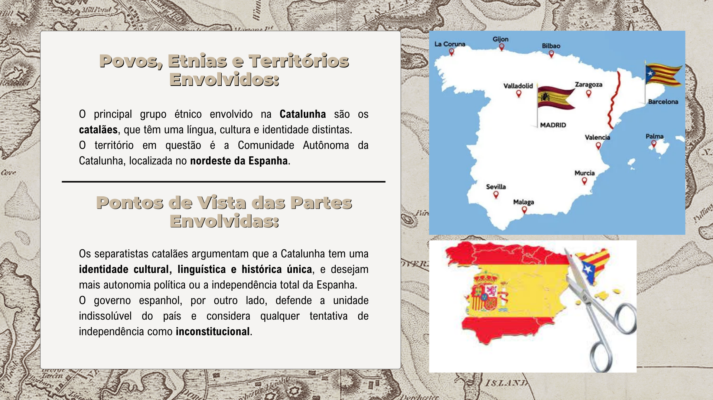
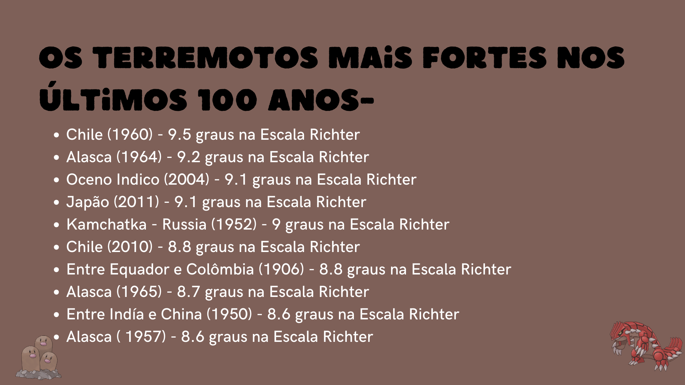

Dopping GH(Linguagens)
Trabalho de artes realizado no primeiro ano do ensino médio. Conta a vida de Oswald De Andrade, e sua trajetoria na arte. Realizado no tema da semana de arte moderna


Combustiveis E Termoquimica Metanol(CN)
Trabalho de Ciencias da natureza, com foco em química, realizado no segundo ano do ensino médio. Explica sobre o Metanol, sua formula, suas substancias, suas vantagens, e suas utilidades



Separatismo na Espanha(CH)
Trabalho de Ciencias Humanas E Sociais, com foco em Hístoria, realizado no segundo ano do ensino médio. Conta sobre os acontecimentos historicos do separatismo na Espanha.



Logaritimos E Terremotos(Matemática)
Trabalho de Matematica, realizado no segundo ano do ensino médio. Explica sobre os logaritimos e terremotos, com escalas, unidades de medida, acontecimentos e locais.